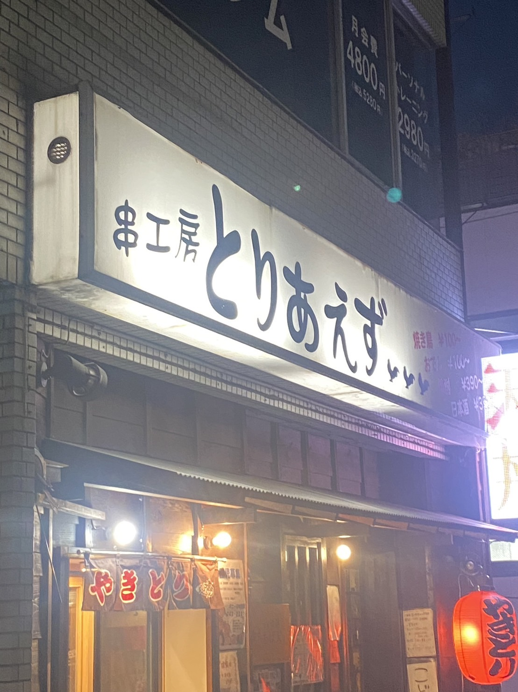
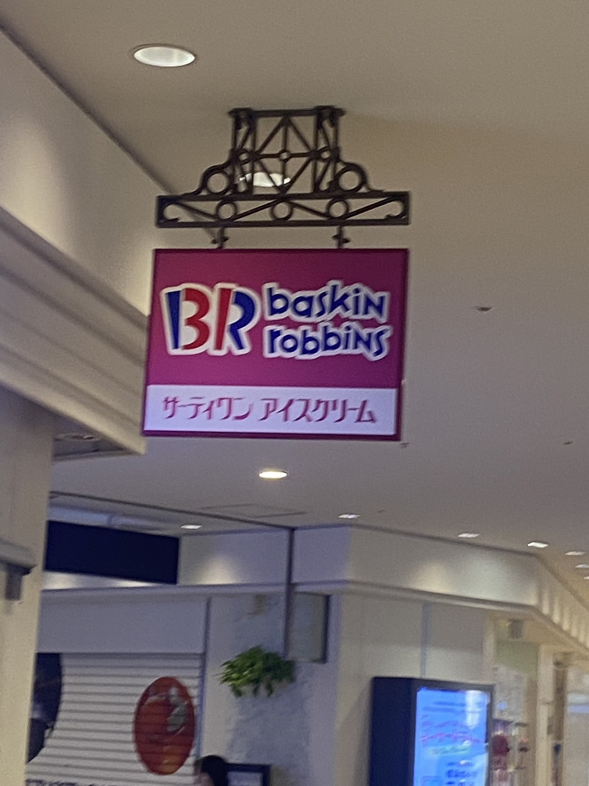
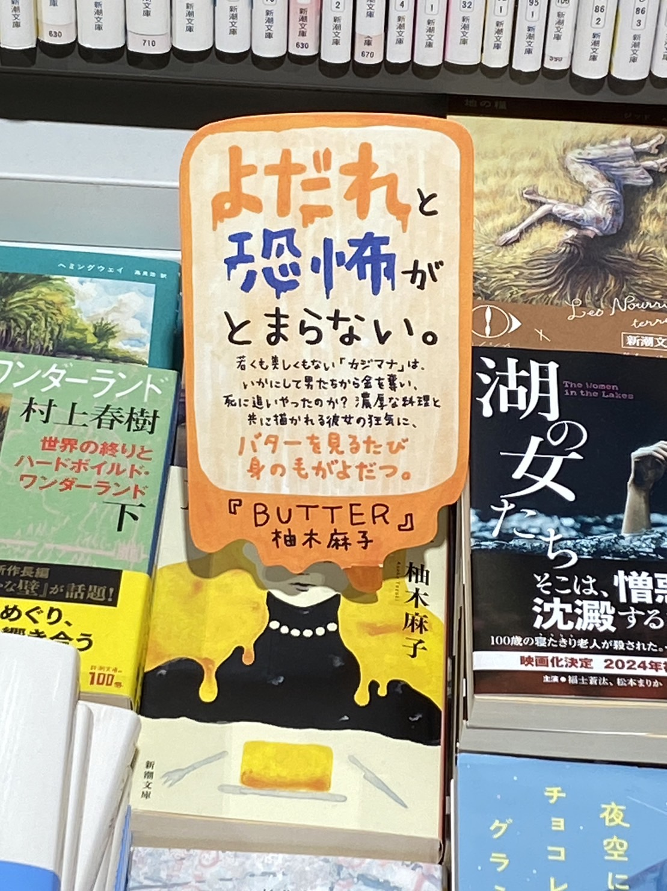

～～世の中にある看板＆サイン～～

10月3日 南区井土ヶ谷で撮影（自分）
この看板を選んだ理由は名前が特徴的だったためです。
このお店は大通りにあり、加えて「とりあえず」というネーミングセンス。
お店をとりあえず探しているそんな時とりあえずにとりあえず行ってみましょう

10月3日 横浜駅内ポルタで撮影（自分）
誰もがよく知るbaskin robbins 通称31（サーティーワン）
看板にもある通り頭文字のBとRを部分的に3と1に見立てています。
31は会社のモットーから来ており、店名にそれを面白く取り入れている

10月9日 横浜駅有隣堂で撮影（自分）
未読なので内容はわからないがホラーで定番の文字に血を垂れさせる表現。
題名がバターということもあり
逆に溶けるという観念を利用して同じような表現をよだれという文字で表現している。